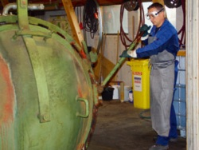
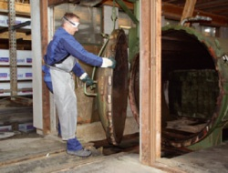

Schutzmaßnahmen
Vorbeugender Holzschutz
Einbringverfahren
Kesseldrucktränkung


Bei Kesseldrucktränkverfahren wird Holzschutzmittel unter Anwendung von Unter- bzw. Normal- und Überdruck oder einer Kombination davon eingebracht. Das Holzschutzmittel wird dabei in die Hohlräume des Holzes gedrückt. Dadurch wird eine größere Eindringtiefe und damit auch eine bessere Schutzwirkung als bei Oberflächenverfahren erzielt.
Für den Schutz der Umwelt sind an Kesseldruckanlagen, an Auffangwannen und dort, wo frisch imprägniertes Holz gelagert wird, eine Reihe von baulichen Maßnahmen durchzuführen1).
Zur Vermeidung von Gesundheitsschäden sollten – vor allem bei Verwendung chromathaltiger Holzschutzmittel – folgende Maßnahmen getroffen werden:
Technische Schutzmaßnahmen
- An Vakuumpumpen, die nach dem Prinzip der Flüssigkeitsringpumpe arbeiten, müssen auf der Druckseite Einrichtungen vorhanden sein, die die Freisetzung von Flüssigkeitströpfchen (Aerosolen) in den Arbeitsraum verhindern, z.B. Flüssigkeitsabscheider.
- Am Dosier-, Misch- und Vorratsbehälter sollten die
Rohrleitungen so geführt werden, dass durch die rückgeführte Imprägnierlösung in Arbeitsräumen keine Tröpfchenbildung auftritt, z.B. Rückführungsleitung von der Druckpumpe bis unmittelbar über den Flüssigkeitsspiegel führen oder den Bereich abdecken.
Organisatorische Schutzmaßnahmen
Im Bereich der Kesselöffnung kann die Freisetzung von Aerosolen verhindert werden, wenn nach dem Druckausgleich durch eine ausreichende Wartezeit (mindestens 1 Stunde) sichergestellt ist, dass sich im Kessel befindliche Aerosole niedergeschlagen haben.
Persönliche Schutzausrüstungen
Umgang mit Holzschutzmitteln besteht an diesen Anlagen im Allgemeinen nur bei der Bereitstellung der Holzschutzmittel und dem Ansetzen der Imprägnierlösung (siehe Abschnitt „Ansetzen der Imprägnierlösung“). Werden frisch imprägnierte Hölzer – vor allem tropfnasse Hölzer – von Hand umgesetzt, sind Schutzhandschuhe und geeignete Schutzkleidung (Chemikalienschutzanzug oder großflächige Gummischürze) erforderlich (siehe Abschnitt „Umgang mit frisch imprägnierten Hölzern“).
Wird der Kessel nach Abschluss der Imprägnierung ohne ausreichende Wartezeit geöffnet und der Kessel betreten, ist geeigneter Atemschutz, Schutzkleidung und Augenschutz erforderlich.
| |
 |
 |
 |
 |
| Holzschutzmittel |
Schutzhandschuhe |
Augenschutz |
Atemschutz |
Schutzkleidung |
| Chromathaltige Holzschutzmittel |
- Nitril
- Polychloropren
- teilweise auch weitere
|
Bei Spritzgefahr
Dichtschließende Schutzbrille
Korbbrille |
Im Allgemeinen nicht erforderlich; Bei Kontakt mit Aerosolen:
Partikelfilter P2 |
Chemikalienschutzanzug, zumindest großflächige Gummischürze |
| Wässrige Holzschutzmittel mit Bor- oder Kupfersalzen, Quats oder Cu-HDO |
- Nitril
- Polychloropren
- teilweise auch weitere
|
Bei Spritzgefahr:
Gestellbrille |
Im Allgemeinen nicht erforderlich |
Im Allgemeinen nicht erforderlich; Arbeitskleidung |
| Wässrige Holzschutzmittel mit organischen Wirkstoffen |
- Nitril
- Polychloropren
- teilweise auch weitere
|
Bei Spritzgefahr:
Gestellbrille |
Im Allgemeinen nicht erforderlich |
Im Allgemeinen nicht erforderlich;
Arbeitskleidung |
| Lösemittelhaltige Holzschutzmittel mit organischen Wirkstoffen |
- Nitril
- teilweise auch weitere
|
Bei Spritzgefahr:
Gestellbrille |
Bei großflächiger Anwendung und/oder schlechten Lüftungsverhältnissen erforderlich:
A1 oder A2 (braun-weiß) |
Chemikalienschutzanzug, zumindest großflächige Gummischürze |
| Steinkohlenteerölpräparate |
|
Bei Spritzgefahr:
Dichtschließende Schutzbrille
Korbbrille |
Bei großflächiger Anwendung und/oder schlechten Lüftungsverhältnissen erforderlich:
A1 oder A2 (braun-weiß) |
Chemikalienschutzanzug, zumindest großflächige Gummischürze |
Die Handschuh-Datenbank von GISBAU (www.gisbau.de) enthält Schutzhandschuh-Empfehlungen von verschiedenen Handschuh-Herstellern für die Holzschutzmittel-Produktgruppen.
Es werden Handschuhfabrikate mit Tragedauern für den Spritzkontakt (z.B. Streichen) und den Dauerkontakt (z.B. Spritzen) angegeben.
Auf unbedeckte Körperteile sollten Hautschutzmittel aufgetragen werden.
Nach der Arbeit und vor längeren Arbeitspausen sollten die Hände gereinigt und Hautpflegemittel aufgetragen werden.
1) Siehe hierzu: „Merkblatt für den sicheren Betrieb von Kesseldruckanlagen mit wasserlöslichen Holzschutzmitteln“ und „Merkblatt für den sicheren Betrieb von Kesseldruckanlagen mit Steinkohlenteerölen“ der Deutschen
Gesellschaft für Holzforschung e. V. (DGfH), Schwanthalerstr. 79, 80336 München